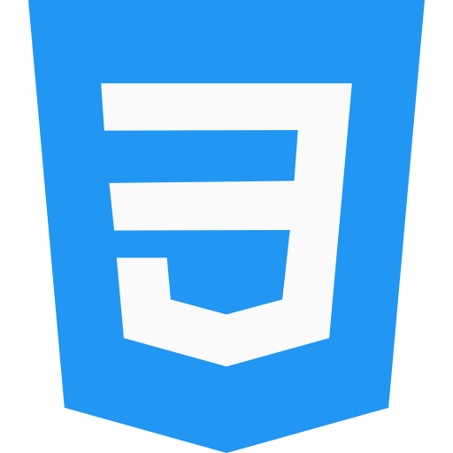
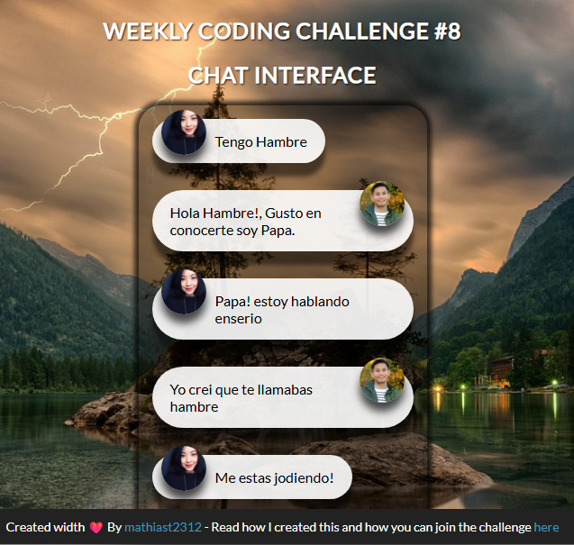
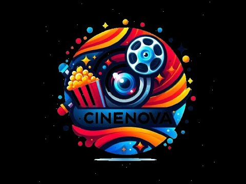
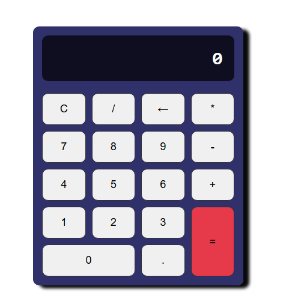
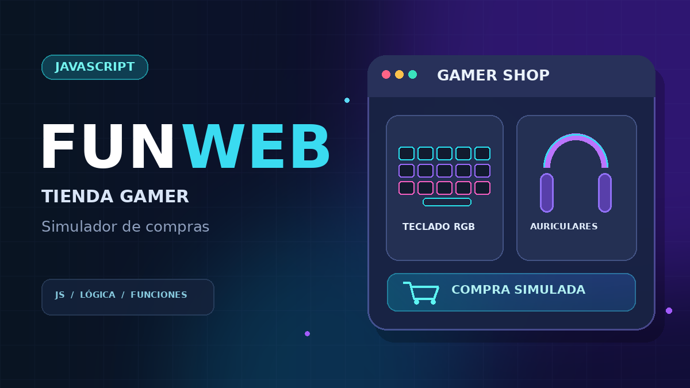
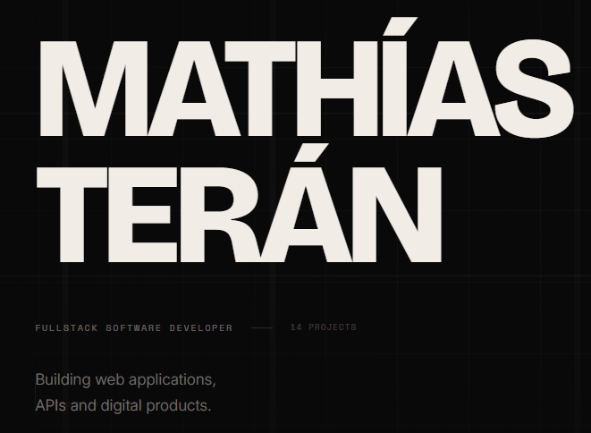

Hola, soy
Mathías Terán
Ingeniero en Sistemas Inteligentes
Soy Ingeniero en Sistemas Inteligentes con experiencia en el desarrollo de software y aplicaciones web. Me apasiona la tecnología y busco constantemente nuevas formas de aprender y mejorar mis habilidades.
Sobre mí
Soy Mathías Terán, un estudiante apasionado por la tecnología y el desarrollo de software, interesado en crear aplicaciones web modernas y soluciones digitales innovadoras. Mis principales intereses incluyen la programación, el desarrollo Full Stack, la administración de servidores, la automatización de procesos y el manejo de bases de datos. Tengo experiencia trabajando con tecnologías como React, Node.js, JavaScript, Python y PostgreSQL, las cuales he utilizado en diferentes proyectos. Mi objetivo académico y profesional es continuar fortaleciendo mis conocimientos, adquirir experiencia en el sector tecnológico y convertirme en un desarrollador de software capaz de crear soluciones eficientes, escalables y útiles que resuelvan problemas reales.
Habilidades

CSS

HTML

GitHub
VSCode
Proyectos
Chat Interface

Proyecto de practicas para HTML, CSS y JavaScript
Ver ProyectoCinenova

Proyecto Final de aplicaciones de escritorio con java
Ver ProyectoCalculadora

Calculadora básica para HTML, CSS y JavaScript
Ver ProyectoFUNWEB

Tienda gamer con JavaScript aplicacion de terminal
Ver ProyectoPortafolio

Portafolio personal
Ver ProyectoContacto
Ingeniero en Sistemas Inteligentes